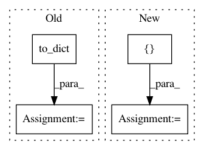

c7e6e4cfd90d2d05bb9c9dffd519b32e9a1f15f6,src/python/pants/reporting/html_reporter.py,HtmlReporter,start_workunit,#HtmlReporter#Any#,81
Before Change
is_test = workunit.has_label(WorkUnitLabel.TEST)
// Get useful properties from the workunit.
workunit_dict = workunit.to_dict()
if workunit_dict["cmd"]:
workunit_dict["cmd"] = linkify(self._buildroot, workunit_dict["cmd"].replace("$", "\\\\$"),
self._linkify_memo)
After Change
self._emit(s)
if is_tool:
tool_invocation_details = "\n".join([
self._render_tool_detail(workunit=workunit, title="cmd", class_prefix="cmd"),
// Have test framework stdout open by default, but not that of other tools.
// This is an arbitrary choice, but one that turns out to be useful to users in practice.
self._render_tool_detail(workunit=workunit, title="stdout", initially_open=is_test),
self._render_tool_detail(workunit=workunit, title="stderr"),
])
cmd = workunit.cmd or ""
linkified_cmd = linkify(self._buildroot, cmd.replace("$", "\\\\$"), self._linkify_memo)
s = self._start_tool_invocation_fmt_string.format(
tool_invocation_details=tool_invocation_details,
html_path_base=self._html_path_base,
id=workunit.id,
cmd=linkified_cmd
)
self._emit(s)
// CSS classes from pants.css that we use to style the header text to reflect the outcome.
In pattern: SUPERPATTERN
Frequency: 4
Non-data size: 4
Instances
Project Name: pantsbuild/pants
Commit Name: c7e6e4cfd90d2d05bb9c9dffd519b32e9a1f15f6
Time: 2015-10-23
Author: benjyw@gmail.com
File Name: src/python/pants/reporting/html_reporter.py
Class Name: HtmlReporter
Method Name: start_workunit
Project Name: nilmtk/nilmtk
Commit Name: f1aa5b71f3665884fe7ba0f612c2aeff92369ce5
Time: 2015-07-10
Author: nipunb@iiitd.ac.in
File Name: nilmtk/disaggregate/hart_85.py
Class Name: Hart85
Method Name: disaggregate
Project Name: snipsco/snips-nlu
Commit Name: 80c863816b382afee76dd8f92c7f60d2579d56b8
Time: 2019-01-02
Author: adrien.ball@snips.ai
File Name: snips_nlu/tests/test_nlu_engine.py
Class Name: TestSnipsNLUEngine
Method Name: test_should_be_deserializable_from_dir
Project Name: Pinafore/qb
Commit Name: 2f74f04253d5a90459401d0f09ea0559d50371a0
Time: 2016-06-25
Author: ski.rodriguez@gmail.com
File Name: util/guess.py
Class Name: GuessList
Method Name: check_recall